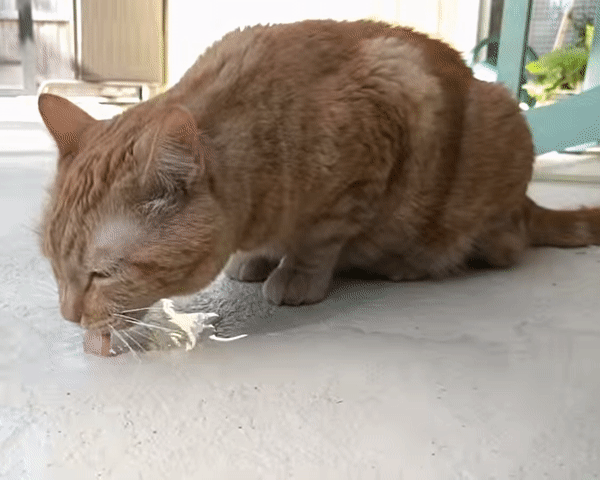

Este é um tigre alegre encontrado nos arredores do World Wide Web.

Este é um tigre sério encontrado nos arredores do World Wide Web.

Este deveria ser um outro tigre encontrado nos arredores do World Wide Web. Porém o google images não me liberou um gif de tigre com licença de uso para Creative Commons... então coloquei o que é quase um tigre.

Este é um tigre braco encontrado nos arredores do World Wide Web no formato png e convertido para o formato svg.